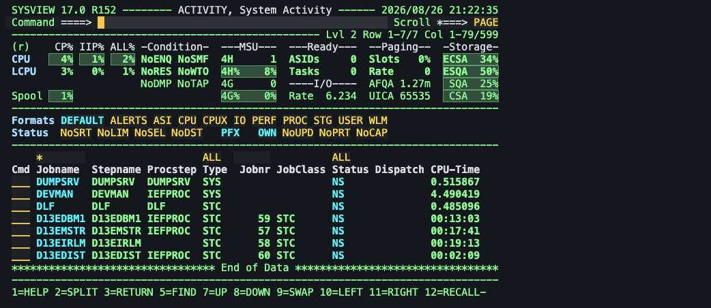
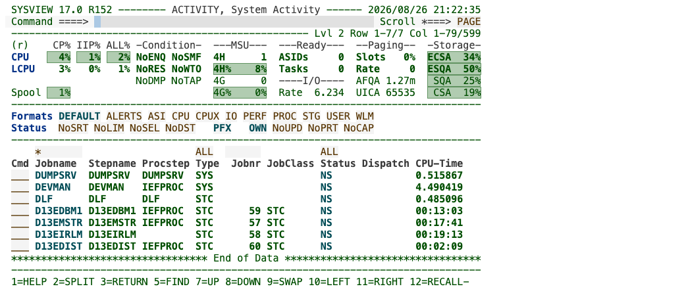
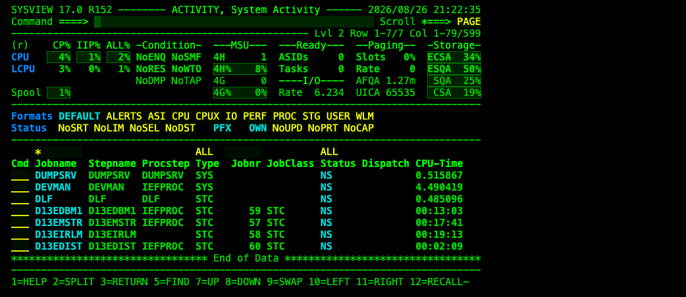
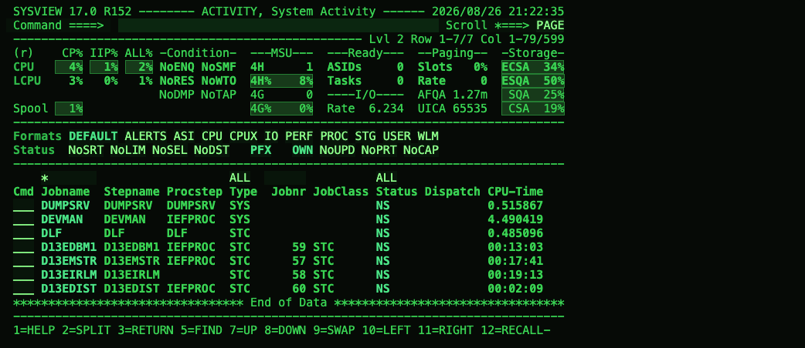
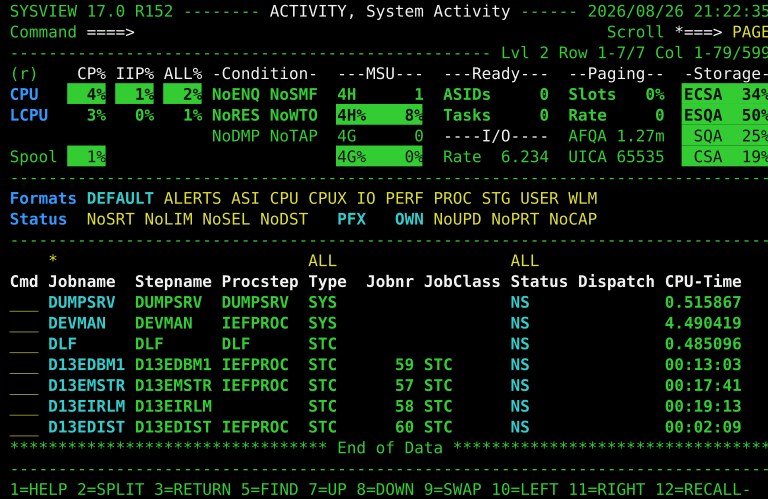

Playwright for the IBM 3270 terminal
A pure-TypeScript tool that lets people and AI agents drive mainframe green-screen applications: from the command line, from a terminal UI, from VS Code. These pages introduce it, argue for it, and record how it was built.
The product tour with live screenshots: the CLI in sixty seconds, what an agent sees, the terminal UI, the VS Code extension, and the roadmap.
3270 explained in Linux terms, why the terminal is the tty of z/OS, the Code4z integration map measured from the shipped bundles, and the case for an emulator inside VS Code.
How the tool was built in five weeks with Claude as a full-time pair: research, spikes, decisions, the test hosts, how testing changed hands, and who could see which defect.
GIBSON is an open-source educational mainframe simulator for security training. Twenty-one real screens captured by driving it with Panelwright: TSO, ISPF, RACF, SDSF, CICS, IMS, z/VM, Db2 and OMVS.
MVS 3.8j predates DB2 by two years and has never had a relational database — until TKDB: SQL, a catalog, transactions, row locks, in 2,051 lines of REXX. And a design decision recorded as rejected, SQLite compiled onto the same system, came back six days later and now runs too.
Five palettes, nine cursor effects, the field-marking layer, pop-up shadows and the terminal UI's own answers — every appearance-only effect Panelwright draws, with live demos running the product's real CSS and tunings.
How it sits beside the x3270 family and the commercial host emulators: a feature matrix across availability, the automation model, the agent and handover features, and the diagnostics — plus an honest section on where Panelwright is the wrong choice.
Broadcom SYSVIEW's ACTIVITY panel, captured from a z/OS system on 2026-08-27 and replayed into the Panelwright VS Code panel. The CPU and storage gauges are reverse-video runs painted by the host with extended attributes; the panel keeps the host's colour as the background under any VS Code theme. The last image is the same screen exported by the CLI as SVG.





panelwright screen --format svg, the same session{kind=link}
{kind=link}
{kind=link}
{kind=link}
{kind=link}